# Sets the repository to download packages from
options(repos = list(CRAN = "http://cran.rstudio.com/"))
# Sets the number of significant figures to two - e.g., 0.01
options(digits = 2)
# Required package for quick package downloading and loading
install.packages("pacman")
pacman::p_load(dlookr, # Exploratory data analysis
formattable, # HTML tables from R outputs
here, # Standardizes paths to data
kableExtra, # Alternative to formattable
knitr, # Needed to write HTML reports
tidyverse) # Powerful data wrangling package suiteExploring like a Data Adventurer
Purpose of this chapter
Exploring the normality of numerical columns in a novel data set and producing publication quality tables and reports
Take-aways
- Using summary statistics to better understand individual columns in a data set.
- Assessing data normality in numerical columns.
- Producing a publishable HTML with summary statistics and normality tests for columns within a data set.
Required Setup
We first need to prepare our environment with the necessary packages
Load and Examine a Data Set
We will be using open source data from UArizona researchers that investigates the effects of climate change on canopy trees. (Meredith, Ladd, and Werner 2021)
# Let's load a data set from the canopy tree data set
dataset <- read.csv(here("Data7_EDA_In_R_Book", "data", "Data_Fig2_Repo.csv"))
# What does the data look like?
dataset |>
head() |>
formattable()| Date | Group | Sap_Flow | TWaterFlux | pLWP | mLWP |
|---|---|---|---|---|---|
| 10/4/19 | Drought-sens-canopy | 184.0 | 82.2 | -0.26 | -0.68 |
| 10/4/19 | Drought-sens-under | 2.5 | 1.3 | -0.30 | -0.76 |
| 10/4/19 | Drought-tol-canopy | 10.6 | 4.4 | -0.44 | -0.72 |
| 10/4/19 | Drought-tol-under | 4.4 | 2.1 | -0.21 | -0.70 |
| 10/5/19 | Drought-sens-canopy | 182.9 | 95.9 | -0.28 | -0.71 |
| 10/5/19 | Drought-sens-under | 2.5 | 1.2 | -0.32 | -0.79 |
Diagnose your Data
# What are the properties of the data
dataset |>
diagnose() |>
formattable()| variables | types | missing_count | missing_percent | unique_count | unique_rate |
|---|---|---|---|---|---|
| Date | character | 0 | 0 | 147 | 0.2500 |
| Group | character | 0 | 0 | 4 | 0.0068 |
| Sap_Flow | numeric | 108 | 18 | 481 | 0.8180 |
| TWaterFlux | numeric | 0 | 0 | 508 | 0.8639 |
| pLWP | numeric | 312 | 53 | 277 | 0.4711 |
| mLWP | numeric | 280 | 48 | 309 | 0.5255 |
variables: name of each variabletypes: data type of each variablemissing_count: number of missing valuesmissing_percent: percentage of missing valuesunique_count: number of unique valuesunique_rate: rate of unique value - unique_count / number of observations
Box Plot

Skewness

NOTE
- “Skewness” has multiple definitions. Several underlying equations mey be at play
- Skewness is “designed” for distributions with one peak (unimodal); it’s meaningless for distributions with multiple peaks (multimodal).
- Most default skewness definitions are not robust: a single outlier could completely distort the skewness value.
- We can’t make conclusions about the locations of the mean and the median based on the skewness sign.
Kurtosis

NOTE
- There are multiple definitions of kurtosis - i.e., “kurtosis” and “excess kurtosis,” but there are other definitions of this measure.
- Kurtosis may work fine for distributions with one peak (unimodal); it’s meaningless for distributions with multiple peaks (multimodal).
- The classic definition of kurtosis is not robust: it could be easily spoiled by extreme outliers.
Describe your Continuous Data
# Summary statistics
dataset |>
describe() |>
formattable()| described_variables | n | na | mean | sd | se_mean | IQR | skewness | kurtosis | p00 | p01 | p05 | p10 | p20 | p25 | p30 | p40 | p50 | p60 | p70 | p75 | p80 | p90 | p95 | p99 | p100 |
|---|---|---|---|---|---|---|---|---|---|---|---|---|---|---|---|---|---|---|---|---|---|---|---|---|---|
| Sap_Flow | 480 | 108 | 25.09 | 40.52 | 1.849 | 13.92 | 2.2 | 4.20 | 0.17 | 0.33 | 0.47 | 1.15 | 2.26 | 2.45 | 3.76 | 5.05 | 5.82 | 9.03 | 10.51 | 16.37 | 48.89 | 83.48 | 109.84 | 176.99 | 184.04 |
| TWaterFlux | 588 | 0 | 11.93 | 19.05 | 0.786 | 6.28 | 2.1 | 3.88 | 0.10 | 0.15 | 0.22 | 0.60 | 1.14 | 1.29 | 1.70 | 2.31 | 3.00 | 4.20 | 5.21 | 7.58 | 23.37 | 43.14 | 51.81 | 80.87 | 96.01 |
| pLWP | 276 | 312 | -0.61 | 0.23 | 0.014 | 0.26 | -1.1 | 1.77 | -1.43 | -1.32 | -1.07 | -0.88 | -0.73 | -0.71 | -0.68 | -0.62 | -0.59 | -0.55 | -0.49 | -0.45 | -0.41 | -0.35 | -0.30 | -0.24 | -0.21 |
| mLWP | 308 | 280 | -1.03 | 0.30 | 0.017 | 0.42 | -0.8 | -0.18 | -1.81 | -1.79 | -1.62 | -1.46 | -1.32 | -1.23 | -1.13 | -1.04 | -0.95 | -0.90 | -0.84 | -0.81 | -0.76 | -0.71 | -0.67 | -0.59 | -0.55 |
describes_variables: name of the column being describedn: number of observations excluding missing valuesna: number of missing valuesmean: arithmetic averagesd: standard deviationse_mean: standard error mean. sd/sqrt(n)IQR: interquartile range (Q3-Q1)skewness: skewnesskurtosis: kurtosisp25: Q1. 25% percentilep50: median. 50% percentilep75: Q3. 75% percentilep01,p05,p10,p20,p30: 1%, 5%, 20%, 30% percentilesp40,p60,p70,p80: 40%, 60%, 70%, 80% percentilesp90,p95,p99,p100: 90%, 95%, 99%, 100% percentiles
Describe your Continuous Data: Refined
The above is pretty overwhelming, and most people don’t care about percentiles outside of Q1, Q3, and the median (Q2).
# Summary statistics, selecting the desired ones
dataset |>
describe() |>
select(described_variables, n, na, mean, sd, se_mean, IQR, skewness, kurtosis, p25, p50, p75) |>
formattable()| described_variables | n | na | mean | sd | se_mean | IQR | skewness | kurtosis | p25 | p50 | p75 |
|---|---|---|---|---|---|---|---|---|---|---|---|
| Sap_Flow | 480 | 108 | 25.09 | 40.52 | 1.849 | 13.92 | 2.2 | 4.20 | 2.45 | 5.82 | 16.37 |
| TWaterFlux | 588 | 0 | 11.93 | 19.05 | 0.786 | 6.28 | 2.1 | 3.88 | 1.29 | 3.00 | 7.58 |
| pLWP | 276 | 312 | -0.61 | 0.23 | 0.014 | 0.26 | -1.1 | 1.77 | -0.71 | -0.59 | -0.45 |
| mLWP | 308 | 280 | -1.03 | 0.30 | 0.017 | 0.42 | -0.8 | -0.18 | -1.23 | -0.95 | -0.81 |
Describe Categorical Variables
dataset |>
diagnose_category() |>
formattable()| variables | levels | N | freq | ratio | rank |
|---|---|---|---|---|---|
| Date | 1/1/20 | 588 | 4 | 0.68 | 1 |
| Date | 1/10/20 | 588 | 4 | 0.68 | 1 |
| Date | 1/11/20 | 588 | 4 | 0.68 | 1 |
| Date | 1/12/20 | 588 | 4 | 0.68 | 1 |
| Date | 1/13/20 | 588 | 4 | 0.68 | 1 |
| Date | 1/14/20 | 588 | 4 | 0.68 | 1 |
| Date | 1/15/20 | 588 | 4 | 0.68 | 1 |
| Date | 1/16/20 | 588 | 4 | 0.68 | 1 |
| Date | 1/17/20 | 588 | 4 | 0.68 | 1 |
| Date | 1/18/20 | 588 | 4 | 0.68 | 1 |
| Group | Drought-sens-canopy | 588 | 147 | 25.00 | 1 |
| Group | Drought-sens-under | 588 | 147 | 25.00 | 1 |
| Group | Drought-tol-canopy | 588 | 147 | 25.00 | 1 |
| Group | Drought-tol-under | 588 | 147 | 25.00 | 1 |
variables: category nameslevels: group names within categoriesN: number of observationfreq: number of observation at group level / number of observation at category levelratio: percentage of observation at group level / number of observation at category levelrank: rank of the occupancy ratio of levels (order in which the groups are in the category)
Group Descriptive Statistics
dataset |>
group_by(Group) |>
describe() |>
select(described_variables, Group, n, na, mean, sd, se_mean, IQR, skewness, kurtosis, p25, p50, p75) |>
formattable()| described_variables | Group | n | na | mean | sd | se_mean | IQR | skewness | kurtosis | p25 | p50 | p75 |
|---|---|---|---|---|---|---|---|---|---|---|---|---|
| mLWP | Drought-sens-canopy | 77 | 70 | -1.32 | 0.298 | 0.034 | 0.41 | 0.3178 | -0.691 | -1.53 | -1.35 | -1.11 |
| mLWP | Drought-sens-under | 77 | 70 | -1.10 | 0.264 | 0.030 | 0.43 | -0.3411 | -0.313 | -1.34 | -1.05 | -0.91 |
| mLWP | Drought-tol-canopy | 77 | 70 | -0.89 | 0.092 | 0.010 | 0.12 | -0.2608 | -0.402 | -0.95 | -0.89 | -0.83 |
| mLWP | Drought-tol-under | 77 | 70 | -0.81 | 0.171 | 0.019 | 0.21 | -0.9539 | -0.412 | -0.91 | -0.74 | -0.70 |
| pLWP | Drought-sens-canopy | 69 | 78 | -0.67 | 0.246 | 0.030 | 0.32 | -0.3510 | -0.274 | -0.79 | -0.71 | -0.47 |
| pLWP | Drought-sens-under | 69 | 78 | -0.70 | 0.284 | 0.034 | 0.28 | -1.1510 | 0.480 | -0.80 | -0.59 | -0.52 |
| pLWP | Drought-tol-canopy | 69 | 78 | -0.63 | 0.096 | 0.012 | 0.14 | -0.4644 | -0.592 | -0.71 | -0.60 | -0.57 |
| pLWP | Drought-tol-under | 69 | 78 | -0.44 | 0.132 | 0.016 | 0.16 | -0.4333 | -0.432 | -0.52 | -0.41 | -0.36 |
| Sap_Flow | Drought-sens-canopy | 120 | 27 | 85.27 | 41.314 | 3.771 | 40.09 | 1.0493 | 0.150 | 53.98 | 76.72 | 94.07 |
| Sap_Flow | Drought-sens-under | 120 | 27 | 1.45 | 0.804 | 0.073 | 1.66 | -0.2242 | -1.635 | 0.53 | 1.67 | 2.19 |
| Sap_Flow | Drought-tol-canopy | 120 | 27 | 9.07 | 1.396 | 0.127 | 2.28 | -0.6344 | -0.695 | 8.12 | 9.29 | 10.40 |
| Sap_Flow | Drought-tol-under | 120 | 27 | 4.57 | 0.902 | 0.082 | 1.09 | -0.9141 | -0.077 | 4.05 | 4.94 | 5.14 |
| TWaterFlux | Drought-sens-canopy | 147 | 0 | 40.40 | 19.028 | 1.569 | 24.88 | 0.9210 | 0.509 | 25.22 | 38.63 | 50.10 |
| TWaterFlux | Drought-sens-under | 147 | 0 | 0.75 | 0.429 | 0.035 | 0.84 | 0.0105 | -1.188 | 0.27 | 0.82 | 1.11 |
| TWaterFlux | Drought-tol-canopy | 147 | 0 | 4.36 | 0.940 | 0.078 | 1.51 | -0.3548 | -0.940 | 3.60 | 4.46 | 5.11 |
| TWaterFlux | Drought-tol-under | 147 | 0 | 2.19 | 0.598 | 0.049 | 0.95 | -0.0087 | -0.779 | 1.74 | 2.20 | 2.69 |
Testing Normality
- Shapiro-Wilk test & Q-Q plots
- Testing overall normality of two columns
- Testing normality of groups
Normality of Columns
Shapiro-Wilk Test
Shapiro-Wilk test looks at whether a target distribution is sample form a normal distribution
dataset |>
normality() |>
formattable()| vars | statistic | p_value | sample |
|---|---|---|---|
| Sap_Flow | 0.63 | 7.4e-31 | 588 |
| TWaterFlux | 0.64 | 2.2e-33 | 588 |
| pLWP | 0.93 | 3.4e-10 | 588 |
| mLWP | 0.93 | 7.0e-11 | 588 |
Q-Q Plots
Plots of the quartiles of a target data set and plot it against predicted quartiles from a normal distribution
dataset |>
plot_normality()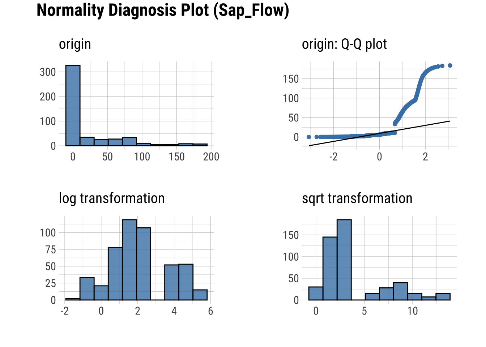
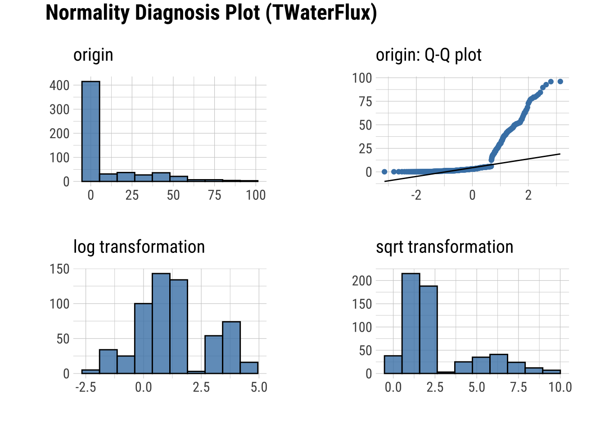
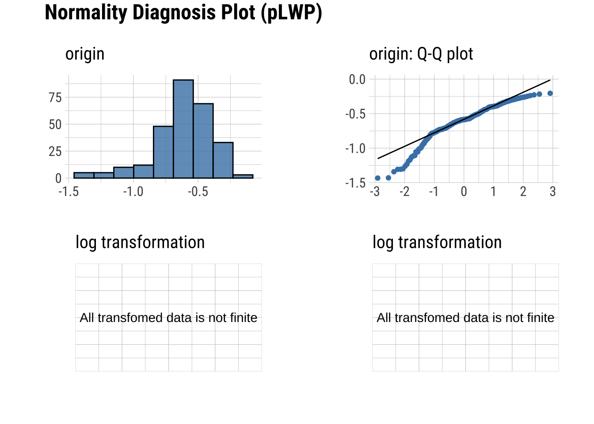
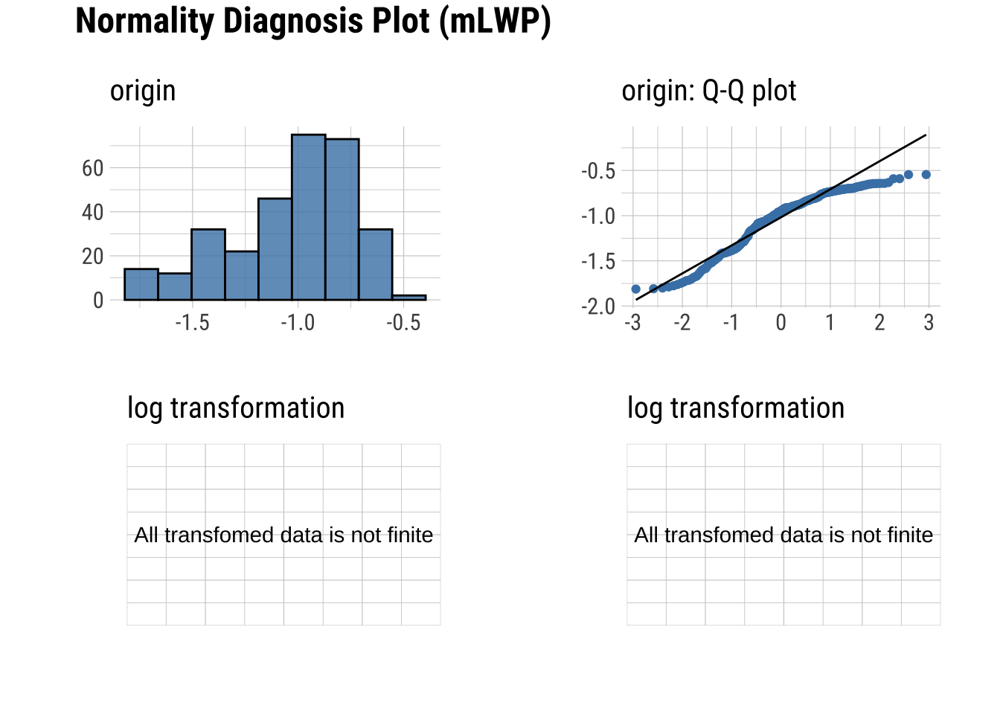
Normality within Groups
Looking within Age_group at the subgroup normality
Shapiro-Wilk Test
dataset |>
group_by(Group) |>
select(Sap_Flow, TWaterFlux, Group) |>
normality() |>
formattable()| variable | Group | statistic | p_value | sample |
|---|---|---|---|---|
| Sap_Flow | Drought-sens-canopy | 0.87 | 9.8e-09 | 147 |
| Sap_Flow | Drought-sens-under | 0.86 | 2.2e-09 | 147 |
| Sap_Flow | Drought-tol-canopy | 0.91 | 8.3e-07 | 147 |
| Sap_Flow | Drought-tol-under | 0.90 | 2.2e-07 | 147 |
| TWaterFlux | Drought-sens-canopy | 0.93 | 1.1e-06 | 147 |
| TWaterFlux | Drought-sens-under | 0.93 | 1.3e-06 | 147 |
| TWaterFlux | Drought-tol-canopy | 0.96 | 1.3e-04 | 147 |
| TWaterFlux | Drought-tol-under | 0.98 | 4.4e-02 | 147 |
Q-Q Plots
dataset |>
group_by(Group) |>
select(Sap_Flow, TWaterFlux, Group) |>
plot_normality()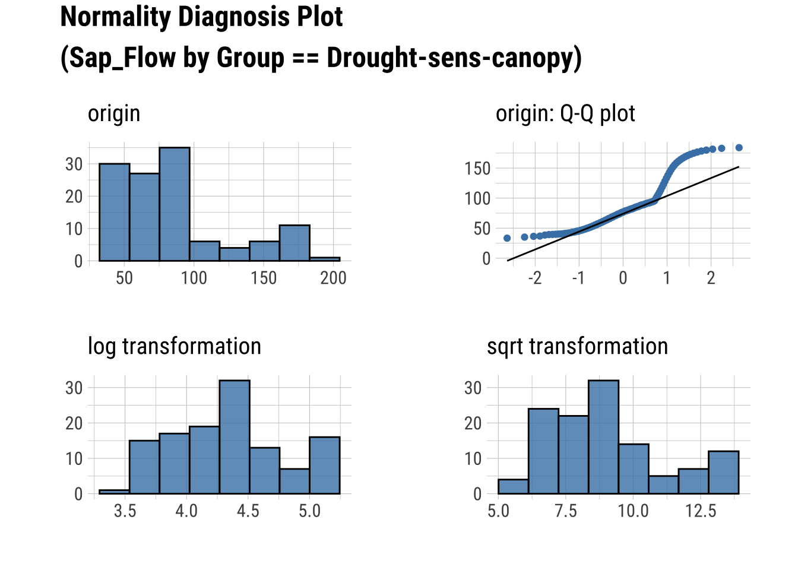
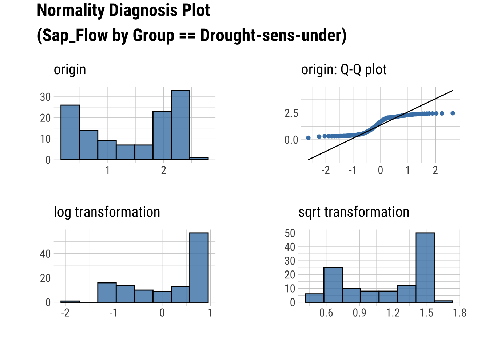
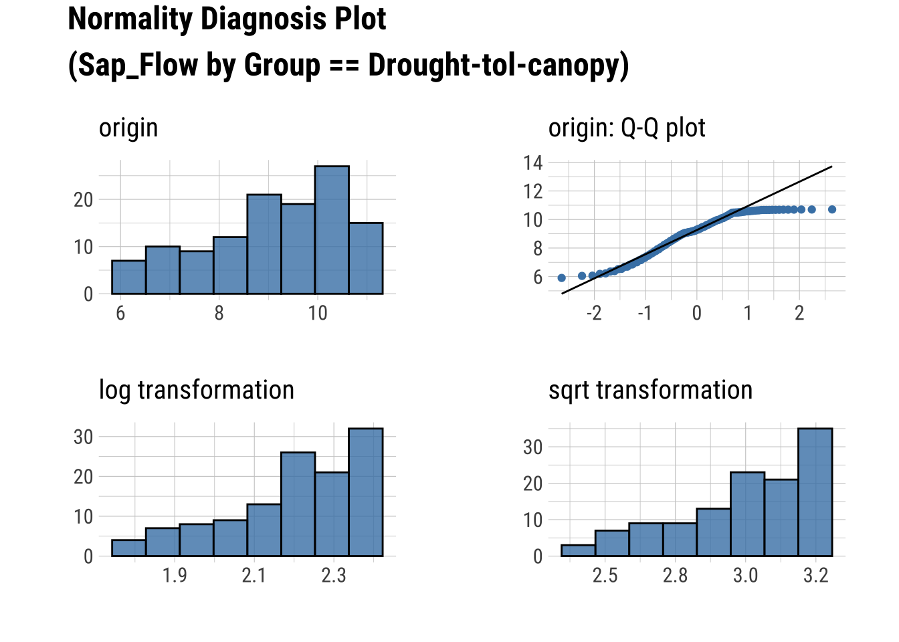
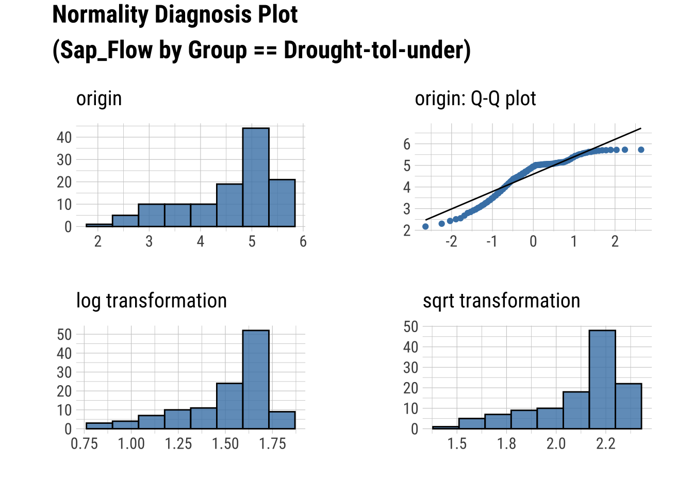
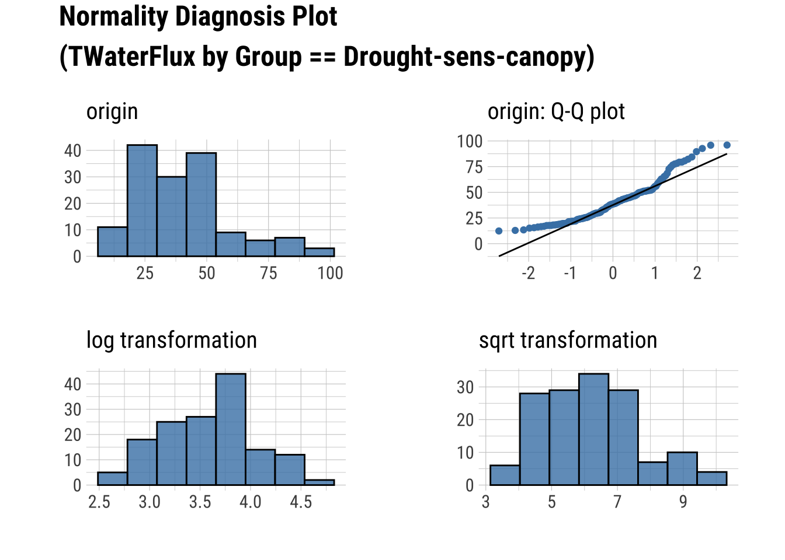
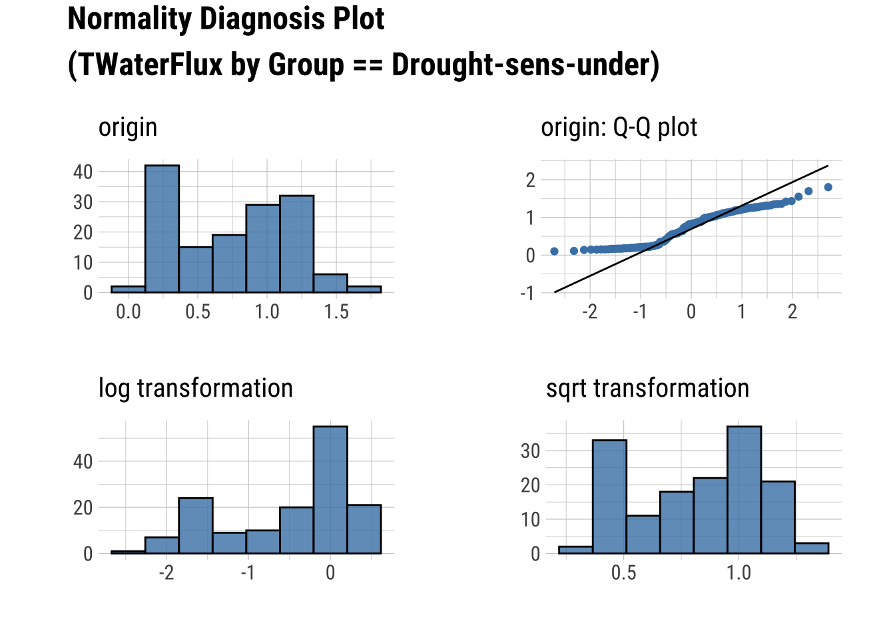
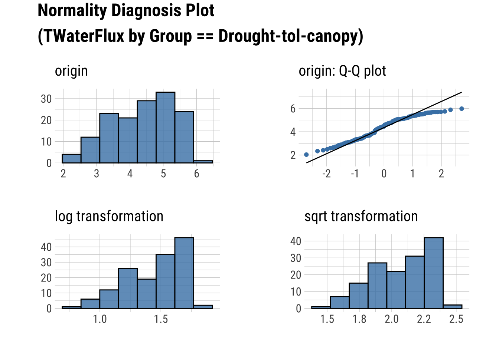
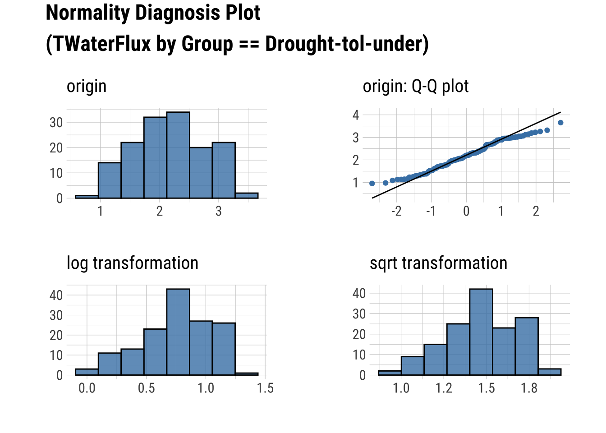
Produce an HTML Normality Summary
eda_web_report(dataset)
Meredith, Laura, S. Nemiah Ladd, and Christiane Werner. 2021. “Data for "Ecosystem Fluxes During Drought and Recovery in an Experimental Forest".” University of Arizona Research Data Repository. https://doi.org/10.25422/AZU.DATA.14632593.V1.